class: center, middle # IEMS 5780<br/>Building and Deploying Scalable<br/>Machine Learning Services ### Lecture 5 - Recommender Systems #### Albert Au Yeung<br/>4th October, 2019 --- class: middle, center # Recommender Systems --- # Agender ### Recommender Systems * Introduction * Content-based Recommendation Systems * Collaborative Filtering - User-based Neighbourhood Model - Item-based Neighbourhood Model - Matrix Factorization * Recommendation as Classification --- # Recommender Systems * We make a lot of **decisions** every day - Transportation - Restaurant reservation - Hotel reservation - Music - Movies * We usually rely on some **suggestions** or **recommendations** - Family and friends - Supervisors, teachers, seniors - Experts - The general public (word-of-mouth) --- # Recommender Systems ### What are the factors that affect our decisions? * Our own **preferences** (of the content, the characteristics, the price, etc.) * What do **most people like**? (which is the blockbuster movie recently?) * What do **people around us like**? (friends and family) * What do people **similar to us** like? --- # Example: Mobile App User Demographics <center> 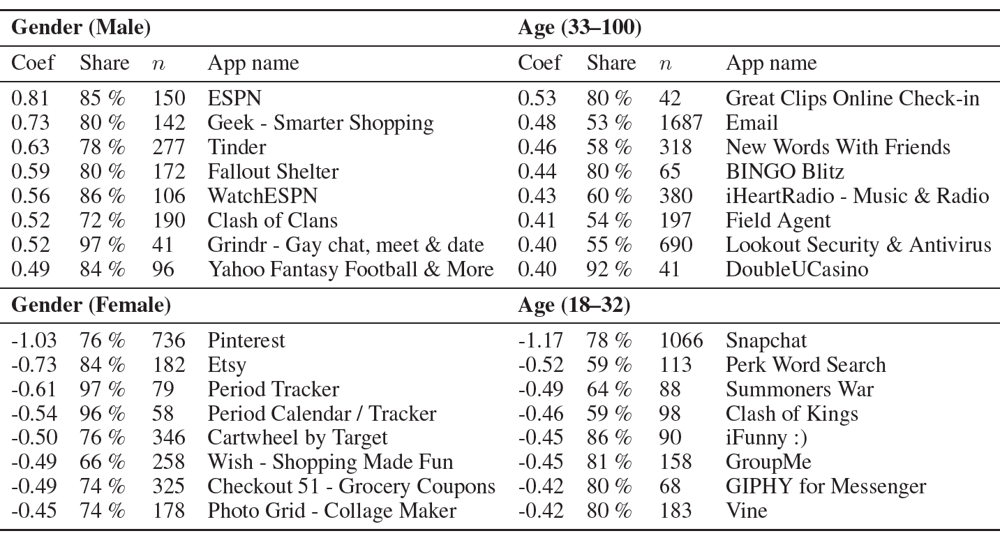 </center> Ref: [You Are What Apps You Use: Demographic Prediction Based on User's Apps](https://arxiv.org/abs/1603.00059) --- # Example: Mobile App User Demographics <center> 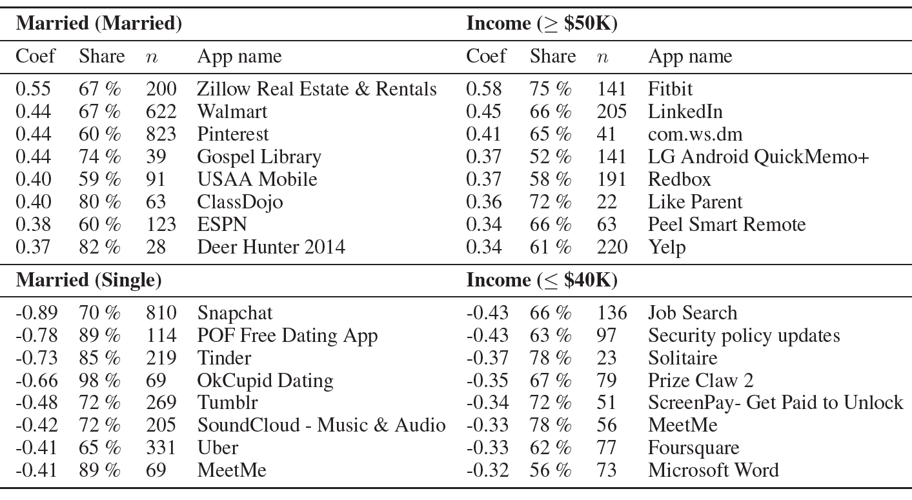 </center> Ref: [You Are What Apps You Use: Demographic Prediction Based on User's Apps](https://arxiv.org/abs/1603.00059) --- # Recommender Systems * There are **many** items out there for us to choose - Tens of thousands of movies and songs - More than 1 million apps in the Android and iPhone app stores - Millions of books published every year * We need more efficient way to **filter information**, and identify items **most relevant** to us * On the other hand, producers also want to **provide consumers things that they really want** (targetted marketing) --- # Mobile Apps <center> 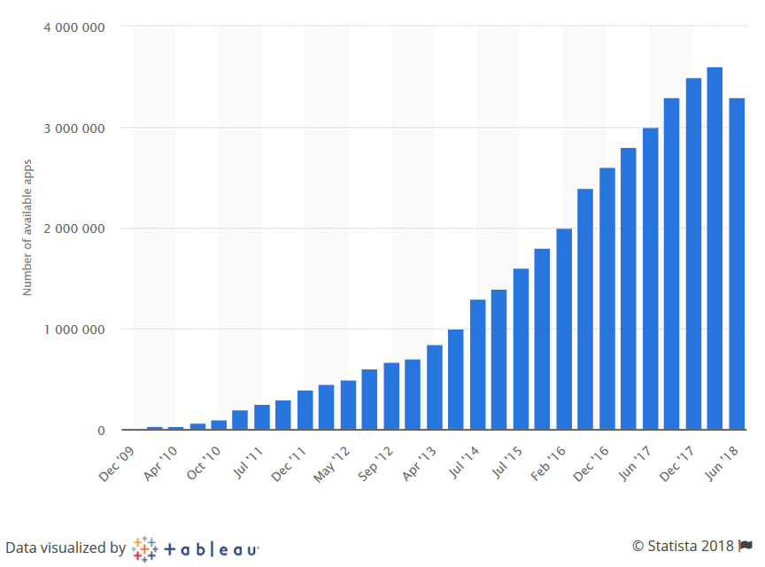 </center> ([https://www.statista.com/statistics/266210/number-of-available-applications-in-the-google-play-store/](https://www.statista.com/statistics/266210/number-of-available-applications-in-the-google-play-store/)) --- # Movies <center> 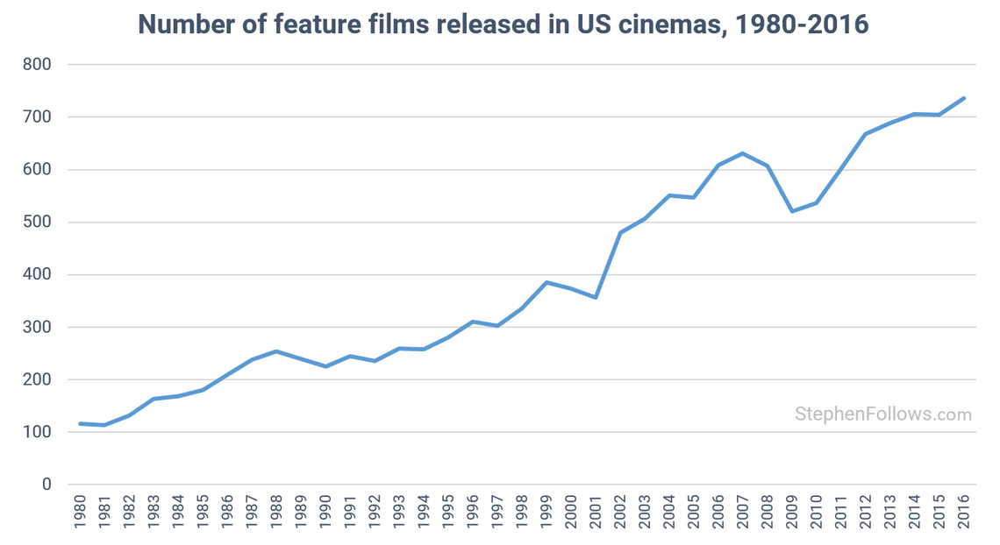 </center> ([https://stephenfollows.com/how-many-films-are-released-each-year/](https://stephenfollows.com/how-many-films-are-released-each-year/)) --- # Solution: Recommender Systems * Use **computers** and **algorithms** to process the huge amount of inforamtion and do the **filtering** for us * Analyse the **tastes** and **preferences** of different people * Analyse the **characteristics** of different items/products * Generate **personalized** recommendation based on users' **past activities** and **feedback** * Systems performing the above tasks are referred to as **recommender systems** / **recommendation systems** --- class: split # Examples of Recommender Systems .column-left[ <center> </center> ] .column-right[ - Music recommendation - Suggested connections in social networks - Recommended items in e-commerce Websites - Recommended travel destinations and accommodations - ... ] --- # Common Strategies * **Popularity** - Recommend items most people like * **Item Similarity** - Recommend **items that are similar** to what the user has already shown interest * **User Similarity** - Recommend items that are preferred by **users who are similar the the target user** in some ways * **Diversity** - Recommend items that are **least known** to the uuser --- # The Long Tail <center> 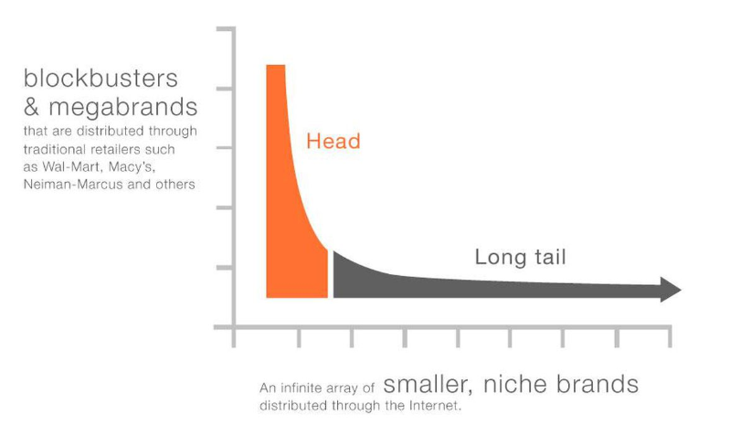 </center> [https://www.forbes.com/sites/robinlewis/2016/05/31/the-long-tail-theory-can-be-reality-for-traditional-megabrands/#2b77afbc6372](https://www.forbes.com/sites/robinlewis/2016/05/31/the-long-tail-theory-can-be-reality-for-traditional-megabrands/#2b77afbc6372) --- class: middle, center # Content-based Recommendation --- # Content-based Recommendation * **Assumptions** - Every user has his/her own **interests** / **tastes** / **preferences** - Each user's preferences can be represented as **a summary of what he/she has seen/read/watched/liked in the past** - A user will prefer something he or she is interested in * We can compare the **content** or **characteristics** of the items * Recommend items that are **similar** to what the user has consumed before --- # Content-based Recommendation ### Two Steps 1. Learn user **preferences** (what does the user like?) 2. Find items that **match** these preferences ### Problems 1. How do we **learn** user preferences? 2. How do we **represent** user interests? 3. How do we **represent** items? 4. How to measure **similarity**? --- # Content-based Recommendation ### **Similarity-based** * **Steps** - Define features to represent the items (e.g. bag-of-words, author, publish date/time, etc.) - Construct **user profile** by the items liked by the user (e.g. average of feature vectors) - Calculate **similarity** between user profile and the new items - Return a **ranked list** of items * What is important here is the **user profile** - How can we **represent** a user? - A user may have **multiple interests**, or his/her interests may **change over time** --- # Content-based Recommendation ### Limitations of Content-based Methods * Content (including meta-data) might not be available or enough in some domains * It is difficult to represent some items by their 'content' (e.g. movies, books, music) * Content-based methods tend to return very similar items --- class: center, middle # Collaborative Filtering --- # Collaborative Filtering ### What is Collaborative Filtering (CF)? * From [Wikipedia](https://en.wikipedia.org/wiki/Collaborative_filtering):<br/><br/>*In the newer, narrower sense, collaborative filtering is a method of making automatic predictions (filtering) about the interests of a user by collecting preferences or taste information from many users (collaborating). The underlying assumption of the collaborative filtering approach is that if a person A has the same opinion as a person B on an issue, A is more likely to have B's opinion on a different issue than that of a randomly chosen person.* --- # Collaborative Filtering ### Basic Idea * Instead of relying on the content of the items, we can analyse people’s **tastes and preferences** * Each person is NOT totally different from another * There are different **kinds** of people, for example: - People who like action movies - People who read literature - People who like spicy food * By grouping **similar users**, we can recommend similar items to similar users * This does not require a lot of information about the users and items themselves --- # Collaborative Filtering ### Two Types of Collaborative Filtering 1. **Memory-based** - Directly use ratings from similar users or items - Also called **neighbourhood-based** methods 2. **Model-based** - Mathematical models are used to represent users, items and their relations - E.g. **matrix factorization**, Bayesian networks, probabilistic models --- # Collaborative Filtering ### User-item Interaction * In the following discussion, we assume that a user may **rate** an item on a **1 to 5** scale <center> 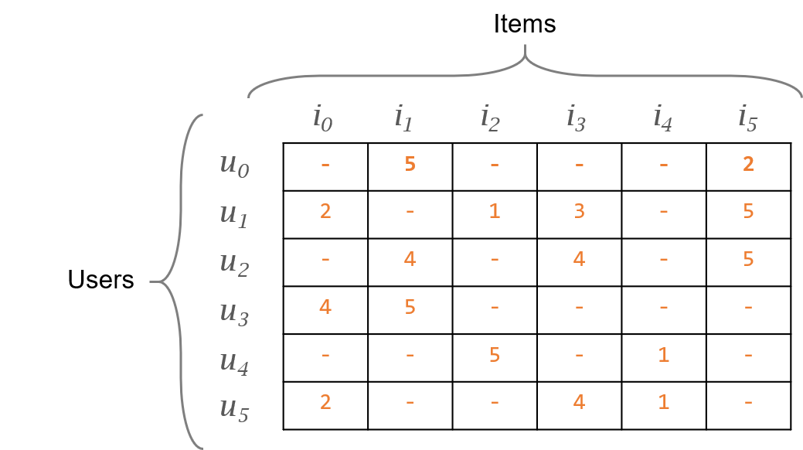 </center> --- class: center, middle # Memory-based Collaborative Filtering --- # Neighbourhood ### What is neighbourhood? * Consider again the **vector space model** * Users and items can be represented as **vectors** in a high dimensional space * More similar items/users will appear **closer** to each other <center> 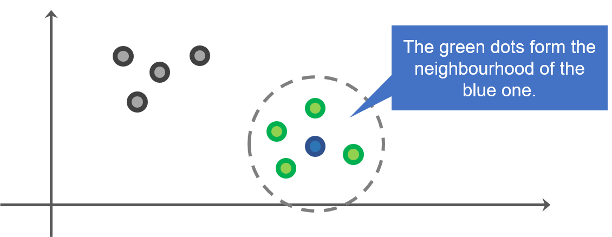 </center> --- # Neighbourhood Models ### Two Types of Neighbourhood Models 1. **User-based** - We consider **similar users** - The neighbourhood of a user consists of users who like similar items 2. **Item-based** - We consider **similar items** - The neighbourhood of an item consists of items that are preferred by similar users --- # User-based Collaborative Filtering * **Task**: Predict the **extent** to which user `\(u\)` likes item `\(i\)` * **Procedures**: - We have user `\(u\)`, and item `\(i\)` - Find a set of users who are similar to `\(u\)` and have rated `\(i\)` - Get the **average rating** on `\(i\)` given by this set of users - Do this for all items, come up with a **ranking** based on the predict rating --- # User-based Collaborative Filtering * In doing **user-based CF**, we made the following **assumptions**: - If users had similar tastes in the past, they should have similar tastes in the future - User preferences remain **stable and consistent** over time * Furthermore, we need to define **similarity** * **Similarity** - Should reflect how **close** the tastes and preferences of two users are - Similar users should assign **similar ratings** to the same set of items --- # Similarity - Pearson Correlation * One way of computing similarity between two users is to use the **pearson correlation** <center> 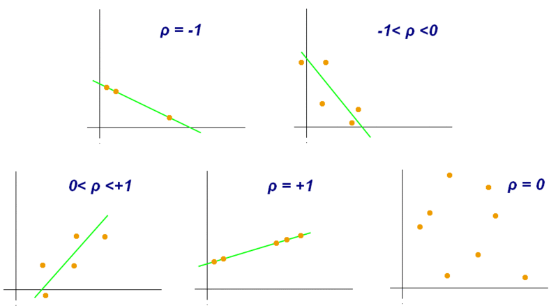 </center> --- # Similarity - Pearson Correlation * `\(x\)`, `\(y\)`: users * `\(r_{x,i}\)`: rating assigned to `\(i\)` by `\(x\)` * `\(I\)`: the set of items rated by both `\(x\)` and `\(y\)` * `\(\text{sim}(x, y)\)` has a value between -1 and 1 <center> 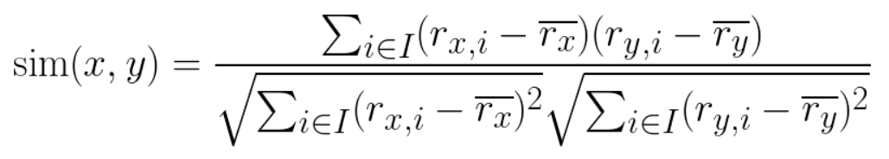 </center> --- # Similarity - Pearson Correlation * In Python, you can easily compute the correlation using the `scipy` module's [pearsonr function](https://docs.scipy.org/doc/scipy/reference/generated/scipy.stats.pearsonr.html) ```python >>> from scipy.stats import pearsonr >>> a = [5,2,1,4,3,1] >>> b = [1,5,4,2,1,2] >>> pearsonr(a,b) (-0.59628479399994383, 0.21157899460007421) >>> >>> a = [5,2,1,4,3,1] >>> b = [4,3,1,5,4,2] >>> pearsonr(a,b) (0.85978530414910515, 0.028111919656069226) >>> ``` --- # Predicting Ratings * How to **predict** a user's rating for an item? * Use the equation below:<br/><br/> <center> 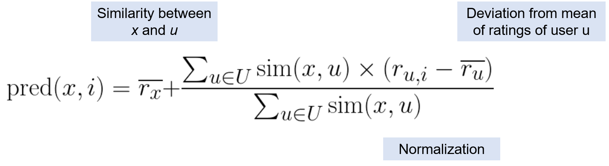 </center> * Example: see [l5-user-based-cf.ipynb](https://colab.research.google.com/drive/1KgSz_razs9UwFfpL0hg9K3_Fh_JqTre_) --- # Limitations * **Data sparsity** - When there are a lot of users and items, very few overlap between users * **Does not scale** - When there are 10 million users, how can you generate all their neighbourhoods? * Two users may have similar taste in one domain but very different taste in another --- # Item-based Collaborative Filtering ### Procedures * We have user `\(u\)` and item `\(i\)` * Find a set of **items**, which are - rated by `\(u\)` - given **similar ratings** as `\(i\)` by other users * Get the **average rating** of this set of items given by `\(u\)` * Use that as the predicted rating of `\(i\)` by `\(u\)` --- # Item-based Collaborative Filtering * In doing **item-based CF**, we made the following **assumptions**: - If two items are given similar ratings by the users, they should have **similar characteristics** * Consider **movies**: - Movies of the same genre, by the same director, or feature the same actor/actress will be assigned similar ratings * Ref: [Amazon.com Recommendations: Item-to-Item Collaborative Filtering](https://dl.acm.org/citation.cfm?id=642471) --- # Predicting Ratings * One way to implement item-based CF is to compute a **weighted combination of ratings** given by `\(u\)` to other items <center> 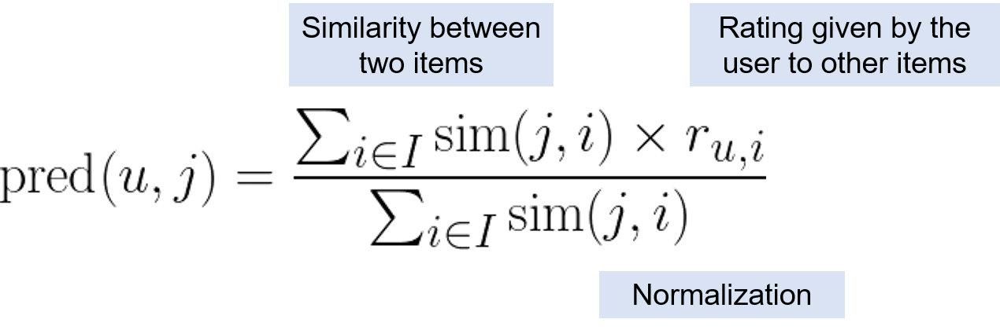 </center> --- # Neighbourhood-based Collaborative Filtering * Neighbourhood and recommended items are usually calculated **offline** * In order to reduce the amount of computation needed, the size of the neighbourhood is usually **limited** * Previous research shows that a neighbourhood size of **20-50** is quite enough * Ref: [Empirical Analysis of Design Choices in Neighborhood-based Collaborative Filtering Algorithms](https://dl.acm.org/citation.cfm?id=594047), Herlocker et al., 2002. --- class: center, middle # Food for Thought ### TED Talk ### How Algorithms Shape Our World #### TEDGlobal 2011, By Kevin Slavin [http://www.ted.com/talks/kevin_slavin_how_algorithms_shape_our_world.html](http://www.ted.com/talks/kevin_slavin_how_algorithms_shape_our_world.html) --- class: center, middle # Model-based Collaborative Filtering --- # Model-based Collaborative Filtering * What we have discussed so far are called **memory-based** collaborative filtering * We have not **trained** any model that can be used to describe the relationship between inputs and outputs * Memory-based models are **easy to implement**, but usually are NOT very accurate and NOT **scalable** * Instead, we can consider a **machine learning approach** to the task of recommendation: - Create a model that explains how **ratings are generated**, or how **items are ranked** - Use past data to **train/optimize** the parameters of the model --- # Model-based Collaborative Filtering ### We can roughly categorize model-based CF into two types: * **Matrix Factorization Approach** - Assume that there are **latent factors** that determine how users rate items - Decompose the user-item matrix using matrix factorization techniques * **Classification Approach** - Consider the task of recommendation as a **classification** problem - For each given pair of user and item, we determine whether the user will be interested in the item (binary classification) - Can take into account **contextual information** and **implicit feedbacks** --- class: middle, center # Gradient Descent --- # Parameter Optimization * Training machine learning models usually means **optimizing parameters** in the model using the **training data** * Each model is characterized by a set of **parameters** * Consider linear regression as an example: $$y = b_0 + b_1 x_1 + b_2 x_2 + ... + b_n x_n$$ * Each `\(b_i\)` is a parameter of the model * How exactly do we find the most suitable values of these parameters given the training data? --- # Parameter Optimization * In some cases, we can find a solution **analytically** - The solution can be represented by a equation - The best parameters can be obtained by substituting the training data `\(X\)` and `\(y\)` into the equation * However, in many cases, the model is complicated and we cannot do that analytically * Another approach: **trial and error** 1. **Initialize** the paraemeters randomly 2. Use the model to **generate predictions** for the training data 3. Computer the **error** of the predictions 4. Use the error to **adjust** the parameters 5. Go to Step 1 if model is not good enough --- class: split # Gradient Descent .column-left[ * Let's consider a very simple example * We want to learn a linear model `\(y = mx\)` * Our training data: - `X = (1, 2, 3, 4)` - `y = (2.4, 3.5, 5.5, 8.7)` * Obviously the value of `\(m\)` can be determined analytically * Let's try our **gradient descent** on this example ] .column-right[ <center> 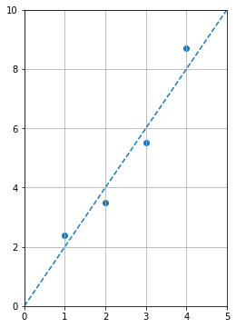 </center> ] --- # Gradient Descent * To perform gradient descent, we need to first have an **error function** that allows us to understand how much error we are making using current values of the parameters (also called **objective function** or **loss function**) * Our error function: $$ error = \frac{1}{N} \sum_{i=1}^N (y_i - \hat{y}_i)^2 $$ $$ = \frac{1}{N} \sum_{i=1}^N (y_i - m x_i)^2 $$ * where N is number of training samples * (note that we use the **mean squared error** in this case) --- class: split # Gradient Descent .column-left[ * The objective is to **adjust** the value of our parameter `\(m\)` such that next time the error will be **smaller** * By **adjusting** we mean either **increase** or **decrease** its value * To know to which direction we should adjust `\(m\)`, we need to know the **gradient** of the error * In our case: $$ \frac{\partial e}{\partial m} = \frac{1}{N} \sum_{i=1}^N (-2 x_i y_i + 2 m x_i^2) $$ ] .column-right[ <center> 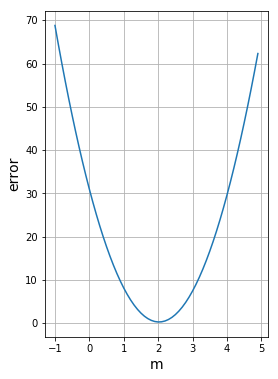 </center> ] --- class: split # Gradient Descent * Once we know the gradient, we know how to adjust `\(m\)` * If gradient is **positive**, we need to **reduce** `\(m\)` * If gradient is **negative**, we need to **increase** `\(m\)` * We use a **hyperparameter** called the **learning rate** to determine **how much** do we adjust `\(m\)` each time - If we change the value too much, we may **miss** the optimal value - If we cahnge the value too little, we may never arrive at the optimal value * Implementation in Python: [l5-gradient-descent-example.ipynb](https://colab.research.google.com/drive/1GY9jFS_iwuD-BSnr_sOmdZ7T6SbrVhGE) --- class: middle, center # Matrix Factorization --- # Model-based Collaborative Filtering * Recall that in recommender systems, we usually deal with a matrix of **user-item ratings** * In **memory-based methods**, we directly compute a prediction based on the other ratings * In **model-based methods**, we come up with a **model** of how ratings are **generated** * **Matrix factorization** is a commonly used model-based methods in recommendations <center> </center> --- # Matrix Factorization - Basic Idea * We assume that users and items can be grouped into different **types** * Take **movies** as an example: - Some users like action movies, while some like romantic movies - Some movies are romantic, while some are exciting and full of suspense <center> 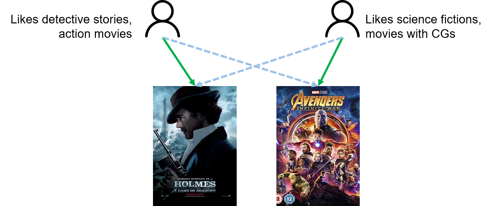 </center> --- # Matrix Factorization ### Challenge * How can we discover **types** of users and items from our data? * **Clustering**? <center> 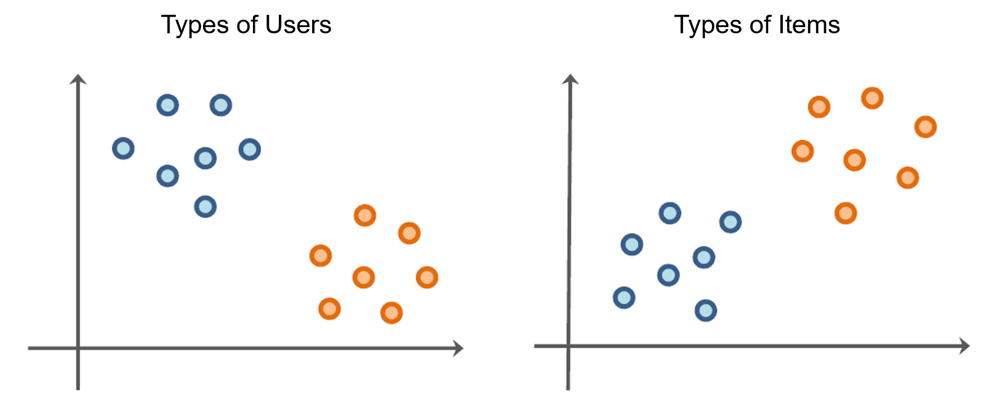 </center> --- # Matrix Factorization * Clustering users and items separately **does NOT** work well - We need to **manually inspect** the meaning of each group (cluster) - We do not know which user groups correspond to which item groups - There is no guarantee that we will obtain exact **correspondence** between user groups and item groups - E.g. there might be a group of users who like animations, but animations might be grouped under different clusters according to their content --- # Matrix Factorization * We can approach this problem differently * Let's assume in advance that there are **`\(K\)` different types of users and items** * We use **vectors of length `\(K\)`** to represent users and items * Each component (**factor**) in a vector represents the **extent** to which the user/item **belongs to that type**<br/><br/> $$ \text{user}_1 = (0.0, 0.1, 0.2, 1.2, 2.3) \\\ \text{user}_2 = (3.1, 0.0, 0.1, 0.2, 0.4) $$ $$ \text{item}_1 = (0.2, 0.9, 1.5, 0.2, 0.8) \\\ \text{item}_2 = (1.5, 2.3, 0.0, 0.9, 0.0) $$ --- # Matrix Factorization * If we consider all the **users** and **items** in our recommender system, we can represent all of them using two different **matrices** <center> 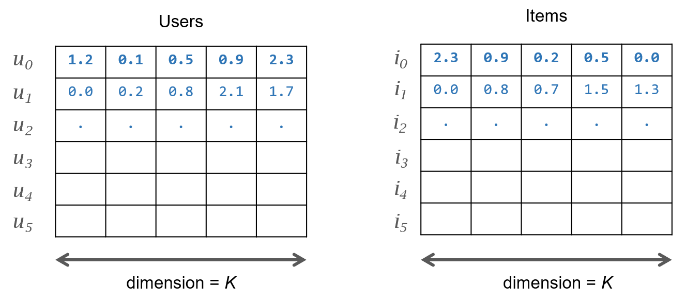 </center> --- # Matrix Factorization * In such a model, the rating on item `\(i\)` given by user `\(u\)` is generated by computing the **dot product** of the corresponding user and item **vectors** * This is equivalent to multiplying the (transpose of) the item matrix with the user matrix <center> 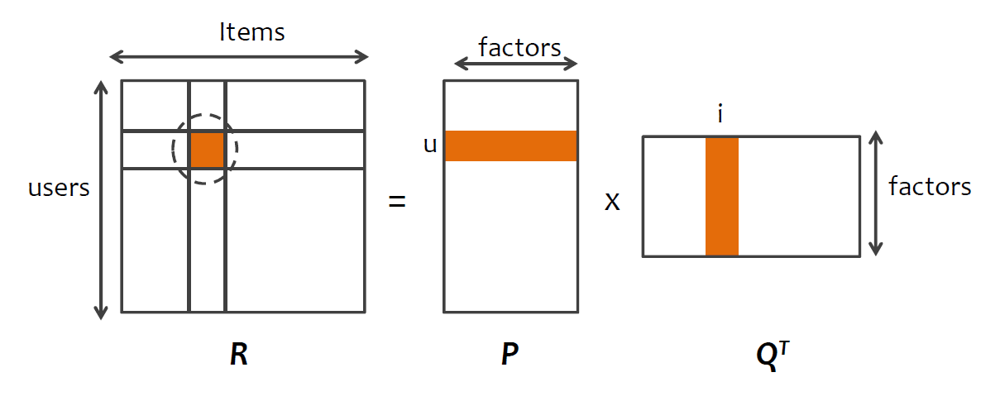 </center> --- # Matrix Factorization * Usually, we are given the matrix `\(R\)`, **matrix factorization** is the process of finding `\(P\)` and `\(Q\)` such that `\(P x Q^T\)` gives an approximation of `\(R\)` $$ P \times Q^T = \hat{R} \approx R $$ * Very often `\(R\)` is **incomplete** (e.g. 99% of the cells are empty), * Therefore, we have to estimate the values in `\(P\)` and `\(Q\)`, instead of solving for exact values • The number of factors `\(K\)` reflects the complexity of our model --- class: split # Matrix Factorization .column-left[ * In matrix factorization, our target is to come up with `\(P\)` and `\(Q\)`, the two **factor matrices** whose product approximates the user-item rating matrix `\(R\)` * When we say approximate, we are talking about the **known values** in `\(R\)` * If we can approximate the known values well, our **predictions** of the unknown values will be **accurate** ] .column-right[ <center> 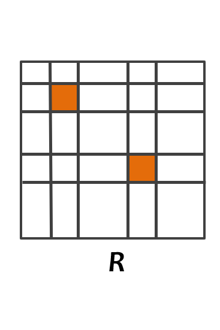 </center> ] --- # Matrix Factorization * Let's focus on **one rating** at a time <center> </center> $$ \hat{r}\_{ui} = \sum\_{k=1}^K p\_{uk} q\_{ki} $$ --- # Matrix Factorization * Our goal is to find all `\(p_{ik}\)` and `\(q_{kj}\)` such that $$ \sum\_{k=1}^K p\_{uk} q\_{ki} \approx r\_{ui} $$ * Our data only contain the values of **some** `\(r_{ij}\)` * How can we determine the values of all `\(p_{ik}\)` and `\(q_{kj}\)`? --- # Matrix Factorization ### Basic Idea: * We first initialize `\(P\)` and `\(Q\)` with some **random values** * We measure our **error**, i.e. how far we are from the **true** values in R * We update the values in `\(P\)` and `\(Q\)` based on the error we computed * **Repeat** the steps above until the error is sufficiently small<br/><br/> * In other words, we can use **gradient descent** --- # Matrix Factorization * Example: <center> 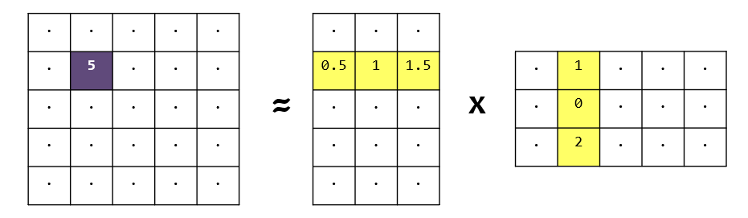 </center> * The **dot product** of the user vector and the item vector is: $$ 0.5 \times 1 + 1 \times 0 + 1.5 \times 2 = 3.5 $$ * We can then compute our **error** --- # Matrix Factorization * Error is give by: $$ e\_{ui} = r\_{ui} - \hat{r}\_{ui} = r\_{ui} - \sum\_{k=1}^K p\_{uk} q\_{ki} $$ * Squared error: $$ e\_{ui}^2 = (r\_{ui} - \hat{r}\_{ui})^2 = (r\_{ui} - \sum\_{k=1}^K p\_{uk} q\_{ki})^2 $$ * The **machine learning** problem here is to optimize all `\(p\)`'s and `\(q\)`'s such that `\(e_{ui}^2\)` is **minimized** --- # Matrix Factorization ### Gradient Descent $$ e\_{ui}^2 = (r\_{ui} - \hat{r}\_{ui})^2 = (r\_{ui} - \sum\_{k=1}^K p\_{uk} q\_{ki})^2 $$ $$ \frac{\partial e\_{ui}^2}{\partial p\_{uk}} = -2 (r\_{ui} - \sum\_{k=1}^K p\_{uk} q\_{ki}) q\_{ki} = -2 e\_{ui} q\_{ki} $$ $$ \frac{\partial e\_{ui}^2}{\partial q\_{ki}} = -2 (r\_{ui} - \sum\_{k=1}^K p\_{uk} q\_{ki}) p\_{uk} = -2 e\_{ui} p\_{uk} $$ --- # Matrix Factorization * Having obtained the gradients, we can construct our **update rules** as follows: <br/> $$ p'\_{uk} = p\_{uk} - \alpha (-2 e\_{ui} q\_{ki}) = p\_{uk} + 2 \alpha e\_{ui} q\_{ki} $$ <br/> $$ q'\_{ki} = q\_{ki} - \alpha (-2 e\_{ui} p\_{uk}) = q\_{ki} + 2 \alpha e\_{ui} p\_{uk} $$ <br/> * where `\(\alpha\)` is the **learning rate** * `\(p'_{uk}\)` and `\(q'_{ki}\)` are the **new values** --- # Matrix Factorization ### Training Data * Note that we only optimize `\(P\)` and `\(Q\)` using the **known values** in the matrix `\(R\)` * We can consider transforming the user-item rating matrix into a list of **tuples**:<br/>(user, item, rating): <center> 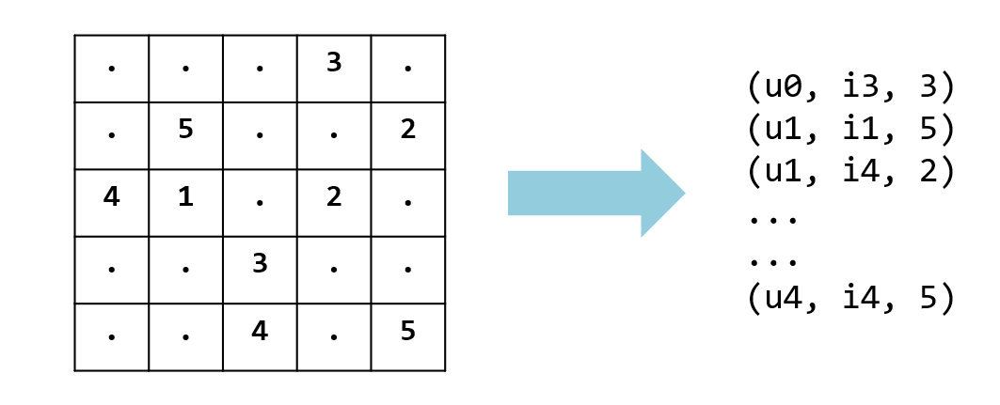 </center> --- # Beyond Rating Predictions * In many other cases, we do NOT always have **ratings (explicit feedback)** from the users * Instead, we would have **implicit feedback** from the users on the items - The user purchased an item - The user clicked on an advertisement - The user viewed the details of an item * Implicit feedbacks can also be considered as **(weaker) indications** that the user is interested in the items * We can still populate a user-item matrix using implicit feedbacks * Ref: [Collaborative Filtering for Implicit Feedback Datasets](http://yifanhu.net/PUB/cf.pdf) (Hu et al. 2008) --- class: center, middle # Recommendation as Classification --- # Recommendation as Classification * Besides rating prediction using matrix factorization, recommendation can also be considered as a **classification task** * Ultimately, we want to determine the **probability that a user is interested / likes / wants to purchase an item** * Besides the explicit/implicit feedbacks, there are actually a lot of things we can consider as **features** - date/time when the users visit the Website - the browsing history of the users - the various characteristics of the items (e.g. actors/actresses in a movie, storyline of a fiction) - Whether the user is using a PC or a smartphone - **interactions** between user and item features --- # Recommendation as Classification * Recommendation can be considered as a **binary classification** problem - Whether the user will **click** on an advertisement - Whether the user will **purchase** the item - Whether the user will **download** the mobile app * **Common classification models** can be used - Logistic regression - Support vector machines - Decision trees / Random forests * The most important things in this approach are the **features** --> **Feature Engineering** --- # Recommendation as Classification * To train a classifier, you need both **positive** and **negative** samples * However, very often you don't know what the user **DOES NOT** like * A user hasn't interacted with an item DOES NOT mean that he/she is not interested in an item * **Negative sampling** - For each positive feedback you have, **randomly sample** items that the user has not interacted with - Use these items as **negative** samples - Can also weight each sample differently (how?) --- class: center, middle # End of Lecture 5